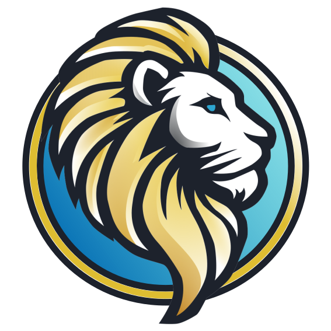

<nav class="navbar navbar-expand-lg navbar-dark bg-dark">
    <a class="navbar-brand" href="./index.html">
        <div>
            
            <span class="lead">Lionk-Framework</span>
        </div>
    </a>
    <button
        class="navbar-toggler"
        type="button"
        data-toggle="collapse"
        data-target="#navbarNav"
        aria-controls="navbarNav"
        aria-expanded="false"
        aria-label="Toggle navigation"
    >
        <span class="navbar-toggler-icon"></span>
    </button>
    <div class="collapse navbar-collapse" id="navbarNav">
        <ul class="navbar-nav ml-auto">
            <li class="nav-item active">
                <a class="nav-link lead" href="./index.html">Home
                    <span class="sr-only">(current)</span>
                </a>
            </li>
            <li class="nav-item dropdown">
                <a
                    class="nav-link lead dropdown-toggle"
                    href="#"
                    id="navbarDropdown"
                    role="button"
                    data-toggle="dropdown"
                    aria-haspopup="true"
                    aria-expanded="false"
                >
                    Milestones
                </a>
                <div class="dropdown-menu" aria-labelledby="navbarDropdown">
                    <a class="dropdown-item" href="milestone1.html">Milestone 1 - 22th July 2024</a>
                    <a class="dropdown-item" href="deadline.html">Deadline PDG - 6th september 2024</a>
                </div>
            </li>
            <li class="nav-item">
                <a class="nav-link lead" href="./about.html">About us</a>
            </li>
            <li class="nav-item">
                <a class="nav-link lead" href="https://github.com/Lionk-Framework">Github</a>
            </li>
        </ul>
    </div>
</nav>
